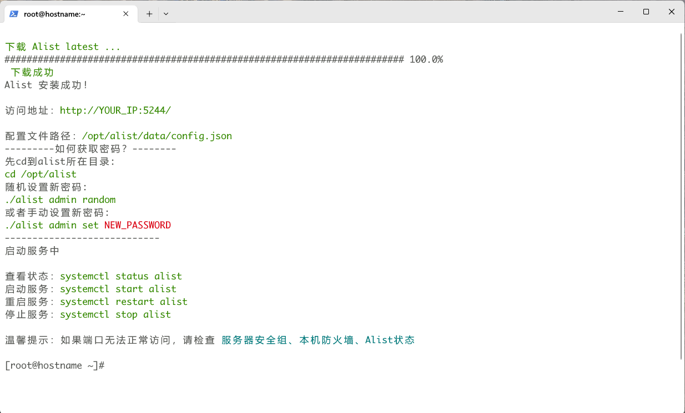
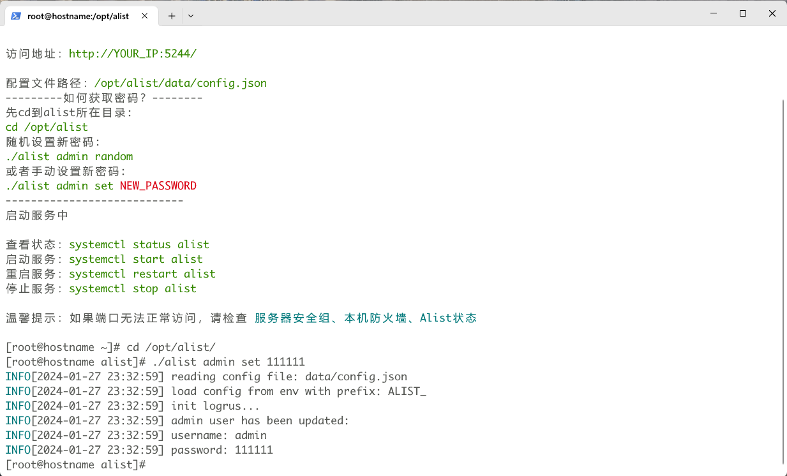
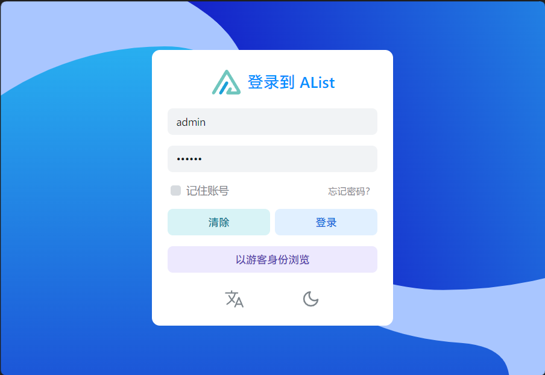
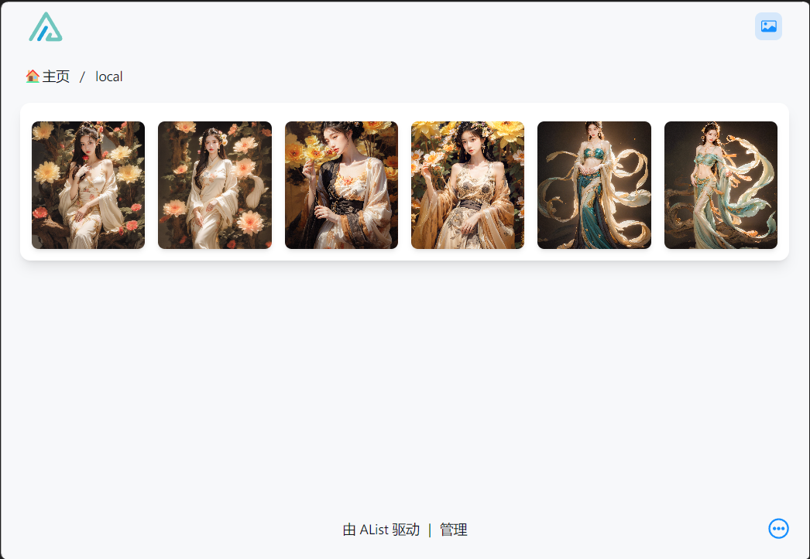
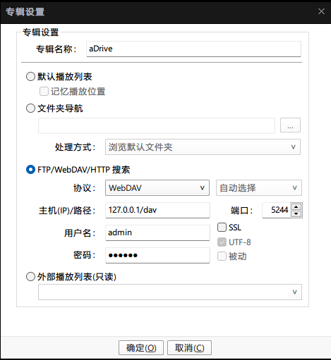

本文分三部分，第一部分在Linux上挂载本地目录，第二部分在Windows上挂载阿里云盘，并使用PotPlayer播放器实现爱优腾自由。
！！！没有LinuxVPS的直接跳转Windows部分！！！
Linux
安装、升级、卸载均采用一键脚本方式
- 安装
curl -fsSL "https://alist.nn.ci/v3.sh" | bash -s install
- 更新
curl -fsSL "https://alist.nn.ci/v3.sh" | bash -s update
- 卸载
curl -fsSL "https://alist.nn.ci/v3.sh" | bash -s uninstall
- 自定义路径
默认安装在/opt/alist，要自定义安装路径，添加安装路径为第二个参数，必须是绝对路径（路径以alist结尾时直接安装到给定路径，否则会安装在给定路径alist目录下），如安装到/home/dir：
1 | # 安装 |
这里使用的默认安装位置，安装完成后切换到安装路径并更改登录密码，这里设置为111111，分别如图所示


到这里Alist的安装就已经完成了，你可以使用其他设备的浏览器访问
用户名admin，密码是上面设置的111111
YOUR_IP:5244
如图：

进入Alist页面，到这里为止，如果你的VPS在国内的话，可以按照Windows部分的Part2来挂载阿里云盘
由于笔者的VPS物理位置特殊，这里仅记录挂载本地目录，这一步只是为了给自己复盘使用，大陆的VPS这一步意义不大，其实可以当作一个暂时的文件中转站使用
在vps上建立或者选择一个挂载的目录，这里使用/home/alist目录，且目录已经存在，若使用其他的目录，可以使用
mkdir -p YOUR_PATH
来创建，YOUR_PATH改为你想要挂载的目录
然后回到Alist的网页界面
底部-管理
左侧-存储
右侧-添加
选择本机存储
挂载路径为你希望显示在Alist首页的路径，我这里写/local，其他可以自便
然后滑到下面，找到根文件夹路径，这里填上面你选定的路径，上面我选择的是/home/alist，如是
最后点击添加，回到主页，就可以看到挂载成功的路径，下面是上传了几张图片的示例，原来目录下没有文件

end,
Windows
上面使用Linux挂载了本地存储，这里使用Windows挂载阿里云盘，第一部分是Windows下的运行，第二部分为挂载
其中第二部分的挂载操作同样适用于上面Linux下的挂载，故此分开
第三部分为添加到PotPlayer(Windows下)
Part Ⅰ
在这里下载客户端压缩包
Windows是ARM就下载ARM版，如果是x86架构，32位系统那么就下载alist-windows-386.zip，64位就下载alist-windows-amd64.zip
下载完成后在任意路径下新建Alist文件夹，解压到这个文件夹中
cmd或终端cd到这里，然后执行启动服务
./alist.exe server
这里会给你提供一个随机密码
类似于下面
Successfully created the admin user and the initial password is : XXXXXX
其中XXXXXX就是密码
如果是本机，那么就在浏览器中打开 localhost:5244
然后登录，账户admin，密码上面的XXXXXX
( PS1：这里的端口可以在设置里修改，因为一些网络的特殊性会将一些端口屏蔽掉，更换端口实测可行。随机密码的问题，登录之后可以在用户设置里更改自定义密码 )
(
PS2：以后每次Windows重启后都需要手动开启Alist服务，如果不添加计划任务也不想在cmd或终端中执行
可以在Alist目录下创建一个bat批处理文件，内容如下
1 | start ./alist.exe server |
这样打开这个文件和使用cmd启动是一样的
想要进一步方便，要么将这个文件创建快捷方式到桌面
要么在桌面创建bat批处理，但是./alist.exe要改为alist.exe的绝对路径
)
Part Ⅱ
挂载阿里云盘
依旧是用户界面登录后
底部-管理
左侧-存储
右侧-添加
选择阿里云盘Open
挂载路径为你希望显示在Alist首页的路径，我这里写
/aDrive，其他可以自便云盘路径选择资源库（一般都是资源库，如果你的影视资源在备份盘，那么就选备份盘）
刷新令牌在这里获取，扫码登录或者账号密码登录，你会得到一大串字符，粘贴到这里
移除方式随便，自己喜欢哪个选哪个
然后保存，就可以在首页看到自己挂载的阿里云盘了
Part Ⅲ
打开PotPlayer
在右侧点击新建专辑
专辑名称自定义
然后选择
FTP/WebDAV/HTTP搜索协议选择
WebDAVip输入
127.0.0.1/dav，端口是5244(默认)用户名和密码是上面登录的那一套
确定即可，在PotPlayer右侧播放列表会出现这个专辑
配置如下

以后只需要打开Alist服务后就可以通过PotPlayer直接观看原画视频
End.?
为解决Windows电脑当作服务器大材小用问题，下文提供Android手机运行Alist服务
Android
方法1
直接下载开源项目，点击运行就可以了，其他配置方式相同。
安装即用
重置版本这里下载
老版本这里下载
方法2
下载Termux，打开Termux
分别执行
1 | apt update |
再执行alist admin获取密码
最后执行alist server启动服务
如果不知道设备ip，执行ifconfig获取ip，这步可以在最前面执行，然后记下ip地址
如果是本机，管理页面就是localhost:5244
其他设备访问，管理页面就是IP:5244
记得在这里更改密码
挂载方式如上相同
end,
在Termux执行
1 | echo “alist server &” >> ~/.bashrc |
这样每次重启Termux时Alist就会自动启动
END.